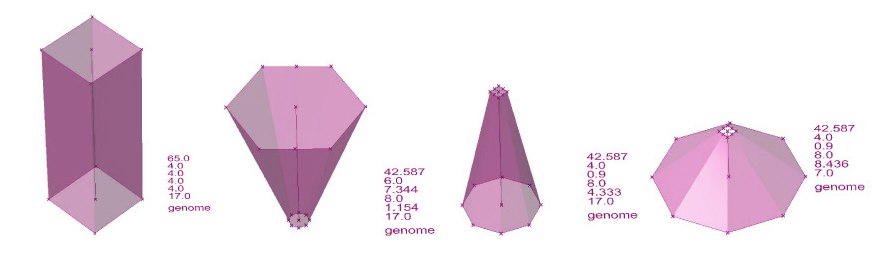

The is an excerpt of a process I completed while working at the Yazdani Studio of Cannon Design R&D.
Evolutionary problem solving mimics the theory of evolution employing the same trial-and-error methods that nature uses in order to arrive at an optimized result. When automated for specific parameters and results, this technique becomes an effective way to computationally drive controlled results within the iterative design process – allowing designers to produce optimized parameters resulting in a form, graphic or piece of data that best meets design criteria. In this post I walk through the process of using Galapagos, an evolutionary solver for Rhino/ Grasshopper, and show an example of how this method can be tied in with analysis tools to optimize a building form based on energy data.
The video below shows an experiment illustrating the entire Galapagos process: a simple, parametric form is modeled and run through the genetic algorithm searching for the fittest 3 dimensional form (the form that yields the lowest amount of solar radiation). In this example, the inputs are two curves that are lofted to form a faceted surface open on the top and bottom of the genome. The parameters, controlled by the sliders, manipulate the form sending each iteration to Ecotect, an environmental simulator, where it is evaluated for average solar radiation within a specified environment. These values are then sent back to Grasshopper, where they inform the algorithm to focus on conditions that favor low solar radiation; thereby, each new generation draws from only the fittest instances of the generation before, creating at each pass a more optimized result. The final form is an inverted cone all planes tilt away from the sun's path and provide shading across the overall form.
As the designer, you control the initial formal inputs (in this case the choice of two lofted polygons), which parameters are manipulated, which results the program values as fit and which generation best meets your desired level of refinement. For example, the program is then re-run, favoring results that maximize solar radiation exposure. The result is the opposite: a faceted cone with its planes tilted in, maximizing sun exposure.
The is an excerpt of a process I completed while working at the Yazdani Studio.